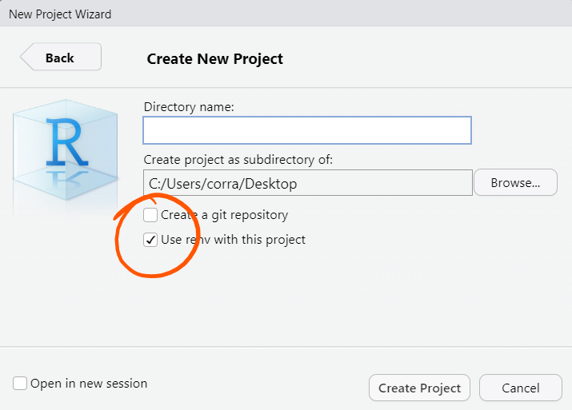
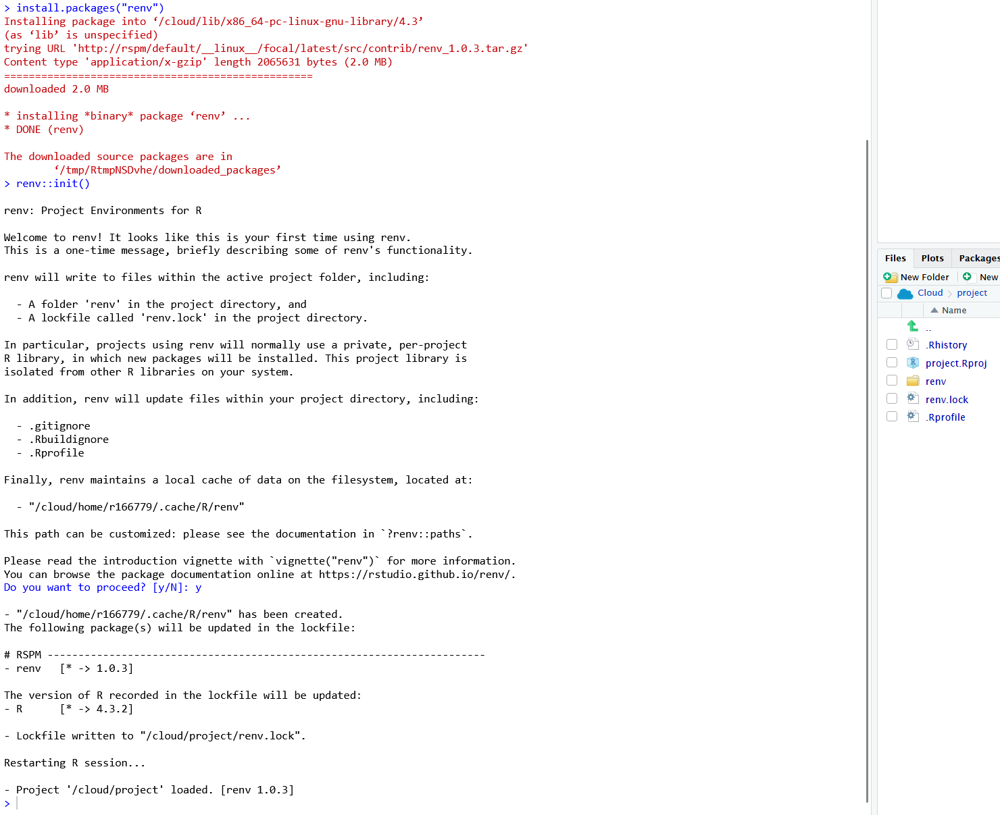
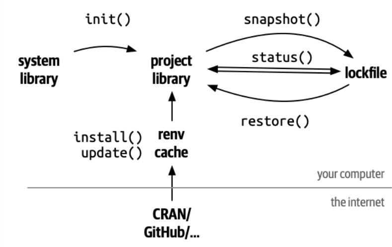
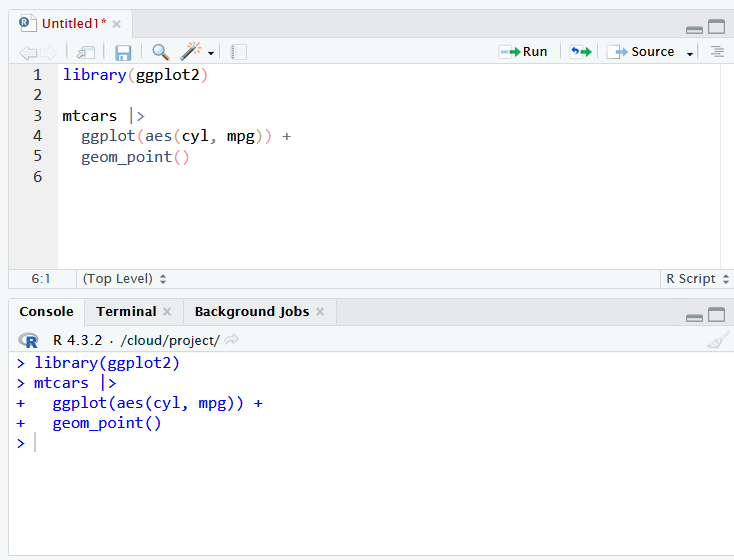
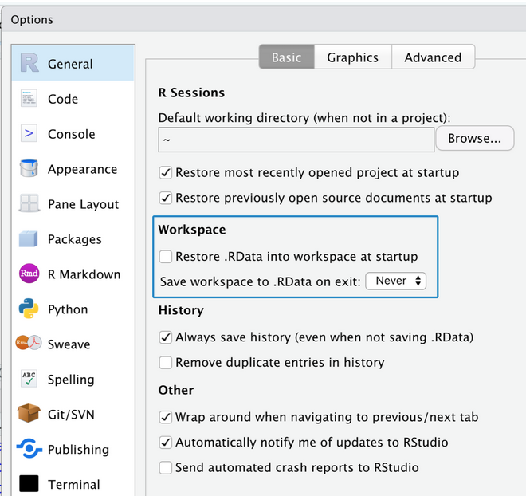
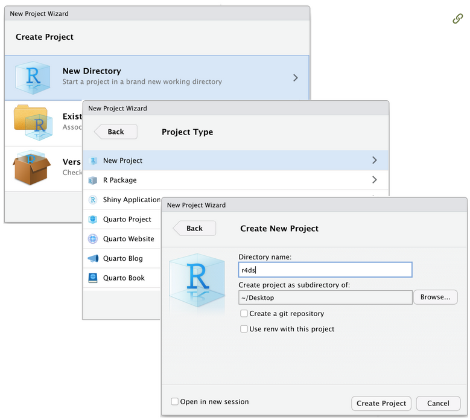
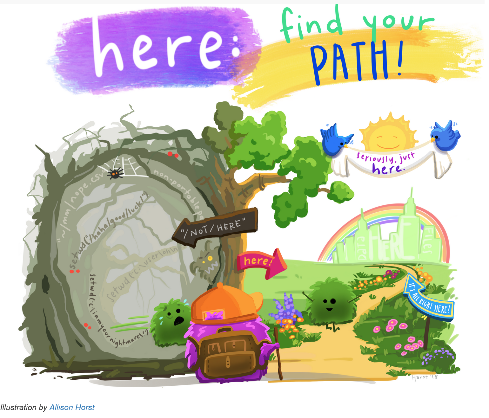

03:00
Day Two:
Infrastructures
40 min approx
Overview
Questions
- What is an RStudio project?
- Why using RStudio projects helps?
- How works the here package, and why it is useful in combination with RStudio projects.
- What is a library (and a repository) of R packages, and how many of them we (can) have on a system?
- What is renv, and why it is crucial for mid- long-term projects?
- How can we activate and use renv on our R projects?
- Why organize a project in standard folders?
- What can be a suitable standard project folder organization?
Lesson Objectives
To be able to
- Activate, restore, a work on an RStudio projects.
- Use the here package to find files and folders within a project.
- Describe the difference from a library and a package, in R.
- Create a project powered by renv
- Use
?renv::init,?renv::status,?renv::snapshot, and?renv::restore - Organize a project in folder, in particular understand and be able to use the standard structure of (
renv/)R/,data-raw/, anddata/, with optional folders foranalyses/, anddev/
{renv}
Glossary
Package: a container for functions and data
Library: a folder on a computer in which installed packages are stored
Repository: a source of packages (often on Internet)
Reminder
Functions and data are identified by their names (which cannot be duplicate within the same package).
When you library() a package you attach it to the current R session.
Attaching a package to the R session, it means to make it function and data names available for you to use. I.e., you are (within the session) expanded the language!
Repositories
The most common repository is CRAN (The Comprehensive R Archive Network) from which you can install packages from any R session by install.packages().
Other repositories are:
- Bioconductor: focused on open source software for bioinformatics.
- Posit Public Package Manager: current and snapshot versions of R and Python packages.
- R Universe: high-performance package server which turns GitHub organizations into repositories.
Libraries
System: shared across all users and projects
User: shared by all the user projects
Project: powered by renv, is the project its own independent collection of packages
Tip
Call .libPaths() to know which library are you using in the session you are.
Create projects powered by {renv}
To create a project powered by renv you can simply tick the corresponding option in RStudio at creation time.
Convert projects to use {renv}
To convert an existing project to use renv call renv::init().
This creates:
A
renv/libraryfolder that will be the projects library containing all the packages used within the projectrenv.lockfile which is the current package inventory of your projects, storing metadata of project used packages so that anyone can re-install them all (with exact the same version) on any other machine.A project dedicated
.Rprofile; which is an R script that is automatically run at every R start, just before to giving you the power to interact with the R session, and it is used by renv to configure the project library in the current session.

The {renv} main workflow
The renv workflow
-
init(): setup the renv infrastructure -
install()/update()/install.packages(): install/update packages -
snapshot(): update therenv.lockfile writing metadata about the current state of the project library -
restore(): restore the library accordingly to the what is prescribed in therenv.lockfile
status(): check for differences between therenv.lockfile and the packages installed in the project library.
{renv} cache
Every renv projects starts with an empty library (there is only the renv package itself).
Working on many projects you will probably use same packages on different projects, so you will need to install them multiple times!
Important
Installing a package means:
- download it from a repository
- install (put) it in the project library
every time…
That is managed efficiently by a renv global cache, which permit to download and install a specific package (with a specific version) only once, so that installing the same package on multiple projects takes time only the first time, and it will be lighting fast in all the subsequent ones.
My turn
YOU: Connect to our pad(https://bit.ly/ubep-rws-pad) and write there questions & doubts (and if I am too slow or too fast)
ME: Connect to the Day-1 project in RStudio cloud (https://bit.ly/ubep-rws-rstudio): script 06-renv.R
Your turn
Your turn
Connect to our pad(https://bit.ly/ubep-rws-pad)
Connect to the Day-1 project in RStudio cloud (https://bit.ly/ubep-rws-rstudio)
…and:
Follow the instructions in the pad
Important
-
init(): setup the renv infrastructure -
install()/update()/install.packages(): install/update packages -
snapshot(): update therenv.lockfile writing metadata about the current state of the project library -
restore(): restore the library accordingly to the what is prescribed in therenv.lockfile
status(): check for differences between therenv.lockfile and the packages installed in the project library.
R/RStudio projects
Scripts - interface
- You are not required to use the interactive R console alone
- You can save what you type/code for future usage in scripts, i.e., simple text files containing code. If R scripts, their extension is
.R, e.g.,my-first-script.R.

Tip
Strive to create scripts that are working as expected while executed as a whole from top to bottom in a new clean R session.
Scripts - shortcuts
Create new R script with the shortcut
CTRL/CMD + SHIFT + NIn RStudio, you can run/execute/evaluate/send-to-R a complete chunk of code by placing the cursor wherever inside that chunk, and using the shortcut
CTRL/CMD + RETURN.1
Tip
- New script:
CTRL/CMD + SHIFT + N - Run line/chunk of code:
CTRL/CMD + RETURN - Run selected piece/lines/blocks of code: select them and
CTRL/CMD + RETURN - Run (source) the whole script:
CTRL/CMD + SHIFT + S - Restart the R session:
CTRL/CMD + SHIFT + F10
Tip
- Always start your script attaching all used packages, i.e. including all the
library()statements (Easily see which package you would need to install, and what is used to run every piece of code in the script). - Never include (uncommented)
install.packages()statements in a script (especially if you share it! changing other people environment can hamper the systems).
Saving and naming files and folder
Machine readable: avoid spaces, symbols, and special characters.1
Human readable: use file names to describe what’s in the file.
Play well with default ordering: start file names with numbers so that alphabetical sorting puts them in the order they get used.2
Common name
alternative model.R
code for exploratory analysis.r
finalreport.qmd
FinalReport.qmd
fig 1.png
Figure_02.png
model_first_try.R
run-first.r
temp.txtBetter names
01-load-data.R
02-exploratory-analysis.R
03-model-approach-1.R
04-model-approach-2.R
fig-01.png
fig-02.png
report-2022-03-20.qmd
report-2022-04-02.qmd
report-draft-notes.txtTip
Spend time to write/style names and codes that make as fast as possible to understand them. You will spend a lot more time reading, understanding, debugging your code, files, and projects than the amount of time you will pass actually typing them. So, saving time in typing possibly more immediate and faster, but less readable code or less meaningful names is the best way to spend more time overall on projects.
Your turn
Your turn
Connect to our pad(https://bit.ly/ubep-rws-pad)
Connect to the Day-1 project in RStudio cloud (https://bit.ly/ubep-rws-rstudio)
…and:
- On RStudio, create a new script with some code inside that:
- attach the ggplot2 package w/
library(ggplot2) - create a variable
x - use
xin some computation, and store the result in another variableres - save your script
- copy-paste your script in the pad, reporting the value of
res - take any other script from one of your colleagues and run it
- write in the pad what is the value you obtained
03:00
Your turn
Your turn
Connect to our pad(https://bit.ly/ubep-rws-pad)
Connect to the Day-1 project in RStudio cloud (https://bit.ly/ubep-rws-rstudio-day-1)
…and:
Important
From a well designed script and data, all the environmental objects can be recreated
From a well created environmental set of objects, is still quite impossible to reconstruct the code used to create it!
Tip
Do not let R to save/restore your workspace (the default), start every R session with a clean environment!

Working directory
Your scripts (with your data) are the source of truth regarding your analyses project!
You/other can and should be able to recreate all your result from your script and data
Where are your analyses?
Every R session is automatically linked to a so called working directory, i.e., a folder in your computer.
Every time you as R to write/save to, read/load from your disk, R will start looking from that folder.
Projects
With RStudio projects, R automatically set the working directory of your session at the project folder. Moreover RStudio automatically save the status of your projects script, including open tabs.
So, with rstudio projects, you can
close and reopen your projects without losing your script (you will lose your R environmental object you have created with your code, but you can always restore it re-running your scripts!).
run multiple R session simultaneously, each one linked to its own working directory, i.e. working effectively on multiple projects.
send/store your projects out from your computer and it will still working

Paths
Inside projects you do not need to use (and you should never do that!) use absolute path in reading or writing files and folders.
Absolute paths, e.g.,
C:\Users\corra\Documents\GitHub\ubep\2023-ecdc-rws\_day-one\slide\points to a specific folder in a specific computer, and will never work on other systems, or if you move your project on a different folder of the same PC
Inside projects you can (and you should always do that!) use relative path in reading or writing files and folders.
Relative paths, e.g.,
_day0one\slide\point to a path relative to the current working directory, so that they always works on different PCs, or if you move your project folder on other position within your computer.
On UNIX Machine (linux/mac) path are separated by slashes (e.g., path/to/folder), while on Windows they are separated by back-slashes (e.g., path\to\folder).
However, in R (and many other software), the backslash has special meaning, so that if you need to write a windows-like path in R, you should type them twice every time (e.g., path\\to\\folder).
Tip
On the other hand, R understand and can manage both the standards in all the systems, so that, in R, you can always use the UNIX-like path, even on Windows machines.
The {here} package
Sometimes the working directory can change with or without our control.1
To use here in your scripts, simply attach it!
-
here()function always uses project-relative paths -
you can compose paths without worrying about the slash/backslash to use!

Folder organization
Folder organization
Now that you:
- have a main project folder to work inside
- can write scripts to store code used for you analyses
- (can write/read files to/from the disk)
- can define robust path relative to the project main folder
You are free to organize and move your scripts and data in well designed folder structures
Tip
Some of the standard R folders are:
-
data-raw/: to store raw data, the original ones they send us -
data/: processed data we will use into our analyses -
R/: a folder to store custom functions source code only (advanced topic)
Suggested folder organization
-
R/: if any, custom functions defined and used within the project. -
data-raw/: to store raw data (i.e., the original ones they send us), and the scripts to preprocess them in preparation for the analyses. -
data/: processed data we will use into our analyses. -
analysis/: analysis scripts. -
output/: report, figure and table produced.
Tip
If you create an R/functions.R script into which you define custom functions, you can make them available during analyses computations including, after the library() calls at the top of the script, the following code:
And next, you can use your custom function within the script.
Tip
source is a base R function that allows to run a whole script, i.e., to execute all the code contained in it.
Your turn
- Go to: https://bit.ly/ubep-rws-rstudio
Your turn
- Create a new project
- Install renv and activate it
- Install ggplot2, and here and update the
renv.lockfile - Create the folders
R/,analyses/,output/ - Create a script
R/functions.Rand define a functionmake_plot()returning aggplot2plot ofmtcars - Create a script
analyses/analysis.Rthat:- attach the
ggplot2package - attach the
herepackage - attach the
functions.Rscript - calls the
make_plot()function - saves the plot in the
output/folder
- attach the
- Run the whole
analyses/analysis.Rscript. - Answer the question reported in the pad (https://bit.ly/ubep-rws-pad).
Acknowledgment
To create the current lesson, we explored, used, and adapted content from the following resources:
The slides are made using Posit’s Quarto open-source scientific and technical publishing system powered in R by Yihui Xie’s Kintr.
Additional resources
License
This work by Corrado Lanera, Ileana Baldi, and Dario Gregori is licensed under CC BY 4.0

References
Break
10:00

UBEP’s R training for supervisors